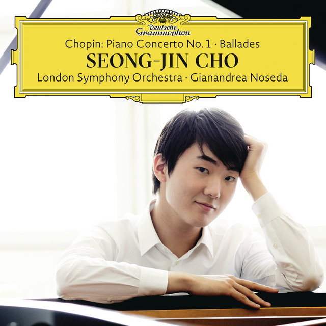

About me
안녕하세요? 2025101268 장지원입니다. 올해 입학한 새내기입니다. 잘 부탁드립니다!
컴퓨터공학과 1학년의 목표
- 프로그래머 알기
- 프로그램 운용에 필요한 프로그래밍 언어 학습
- 프로그램의 구조와 설계 알기
- 프로그램에 맞는 논리적 사고 기르기
- SW 문제 해결 능력 기르기
- 협업을 위한 노력
- 효율적인 코드 분석을 위한 주석 처리
- 의도와 사용에 맞춘 wiki 작성하기
- Github 사용하기
- 협업에 사용되는 툴 익히기
- 다양한 인간관계 맺기
- 동아리를 통해 다양한 사람들과 이야기 나누기
- 대외활동에서 여러 과의 경험 쌓기
- 과 모임에서 컴퓨터공학에 관한 이야기하기
취미
2018년부터 롱보드를 즐기고 있습니다. 현재 좋은 기회로 Gorilla Boardshop의 후원을 받는 라이더로 활동 중입니다.
롱보드용 인스타그램 계정은 @jiw.on__입니다.

독학으로 피아노를 치고 있습니다. 현재는 William Bolcom의 Graceful ghost를 연습하고 있습니다.
가장 좋아하는 곡은 Chopin Ballade No.1 in g minor Op.23 입니다.